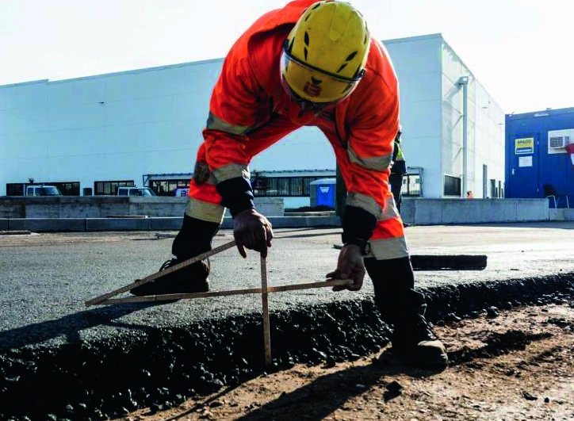
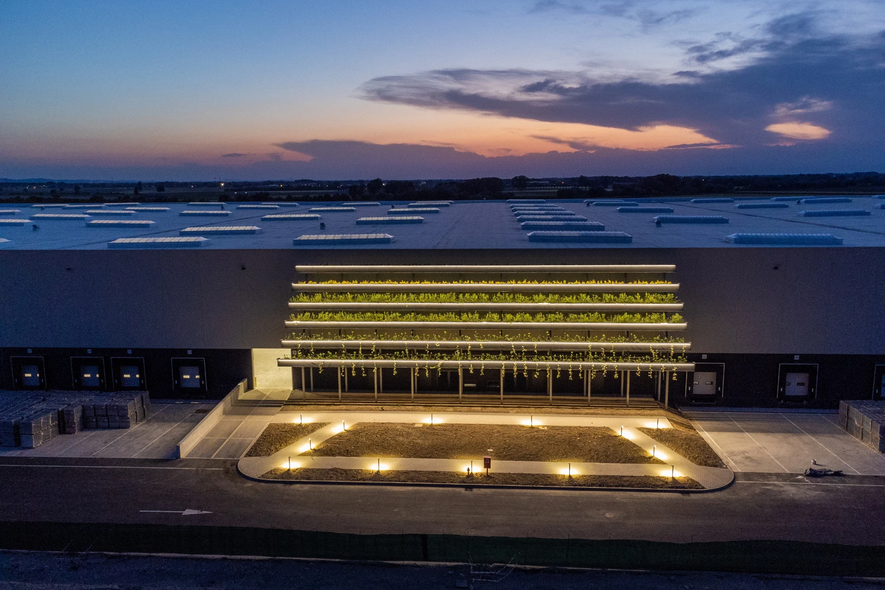

People & safety
Put people at the centre of the project, with health, safety and environmental considerations informing planning and site decisions.

We build your business
↓We bring the construction experience of E2K Group to the next generation of data centers.
Engineering 2K acts as your general contractor, delivering turnkey solutions by coordinating every stage of the project.
From the first concept to final handover, we manage the entire process and coordinate design teams, contractors and specialist partners.
Discover E2K Group ↗
A simple philosophy that shapes how we design, collaborate and build.
Put people at the centre of the project, with health, safety and environmental considerations informing planning and site decisions.
Define requirements early. Coordinate the details. Approach construction and documentation with a first-time-right mindset.
Build lasting relationships with clients and specialist partners through open communication and a shared understanding of the project.
Connect E2K Group’s construction experience and international presence with the specific demands of digital infrastructure.
From the right site to a coordinated handover. Explore the stages of our design and build approach.
Establish a clear starting point for the development, aligning the site, client requirements and technical design.
Bring the building and its systems together through general contracting and coordination with specialist partners.
Coordinate the transition from construction to operation against the owner’s project requirements.

Responsible construction starts with the decisions we make today. Discover E2K’s approach to buildings, environmental impact and social responsibility.
Explore the group’s approach ↗Discuss your next data center development.
Contact us through E2K Group.